STOJAK NA WINO
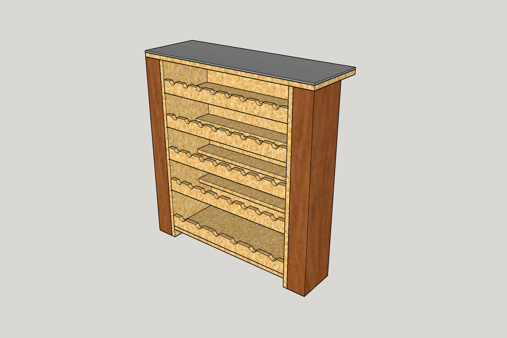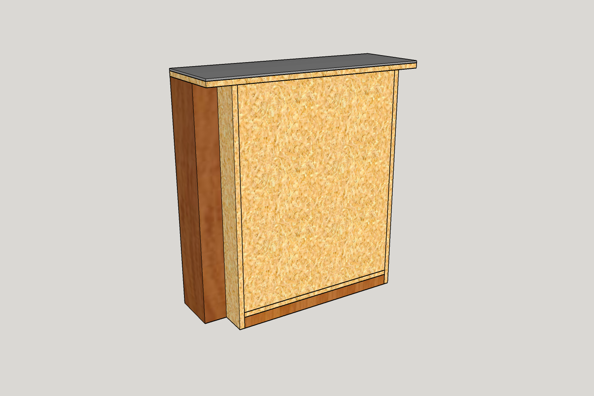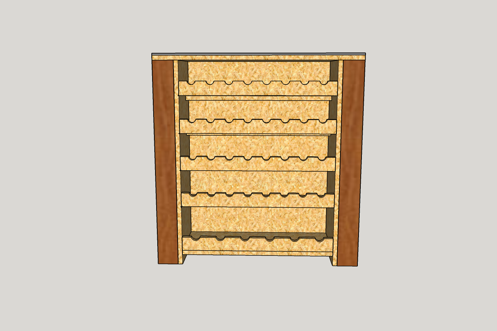
- Spis materiałów do użycia (Wszystkie wymiary w milimetrach)
- szkło: 300 x 890 x 8 mm
- grube deski:
- 1800 x 190 x 90 mm
- 900 x 145 x 45 mm
- płyty OSB:
- 700 x 1000 x 20 mm
- Wymiary poszczególnych części stojaka na butelki:
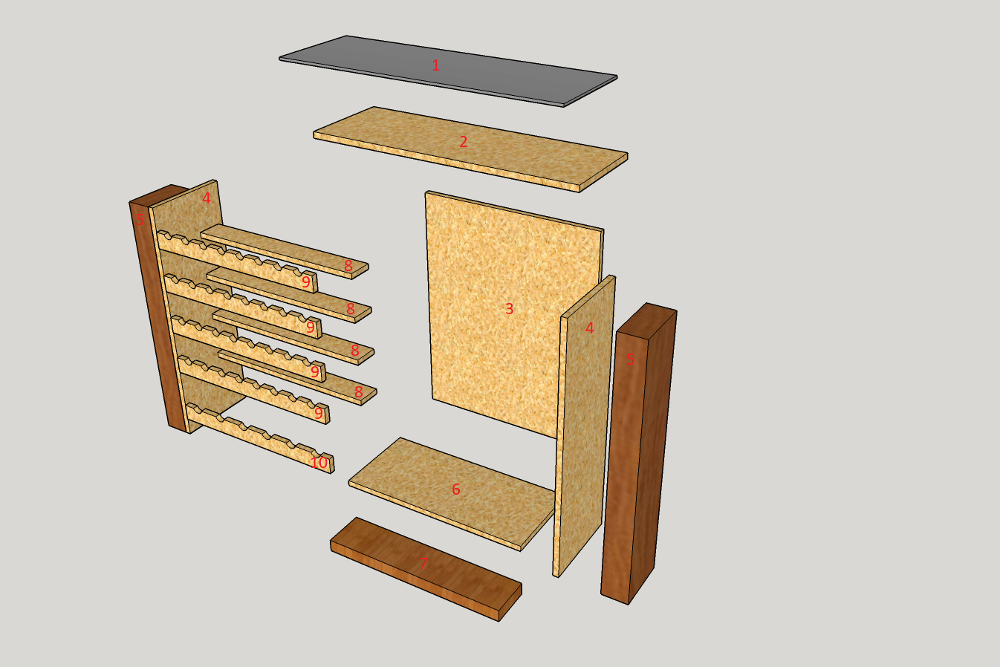
- szkło - 890 x 300 x 8 mm
- blat: płyta OSB - 890 x 300 x 20 mm
- tył: płyta OSB - 669,6 x 835 x 20 mm
- bok: płyta OSB x2 - 900 x 300 x 20 mm
- bok: gruba deska (1800 x 190 x 90 mm) x2 - 900 x 90 x 190 mm
- dół: płyta OSB - 669,6 x 300 20 mm
- dół: gruba deska (900 x 145 x 45 mm) - 669,6 x 145 x 45 mm
- podpora na denko: płyta OSB x4 - 669,6 x 90 x 20 mm
- podpora na szyjkę (standardowa butelka): płyta OSB x4
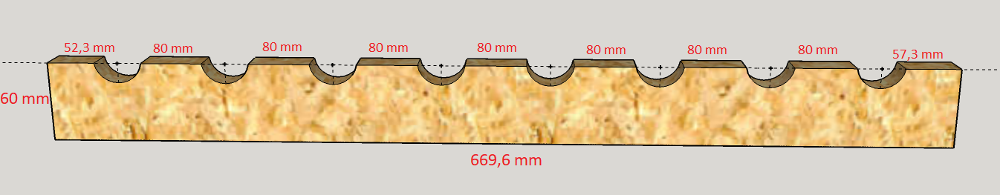
Czerwone wymiary na górze, to odległości między środkami kółek. Średnica kółek to 35 mm.
- podpora na szyjkę (duża butelka): płyta OSB
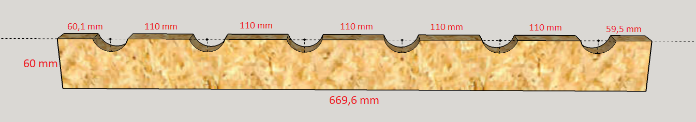
Czerwone wymiary na górze, to odległości między środkami kółek. Średnica kółek to 35 mm.
3. Inne odległości
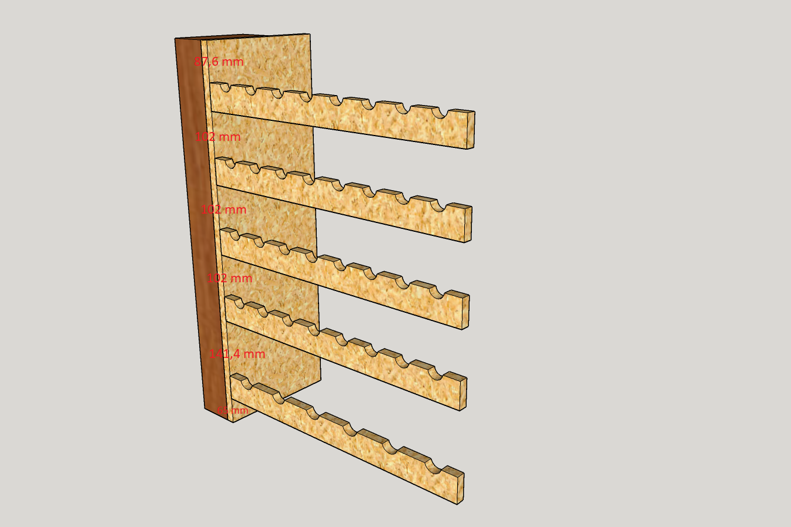
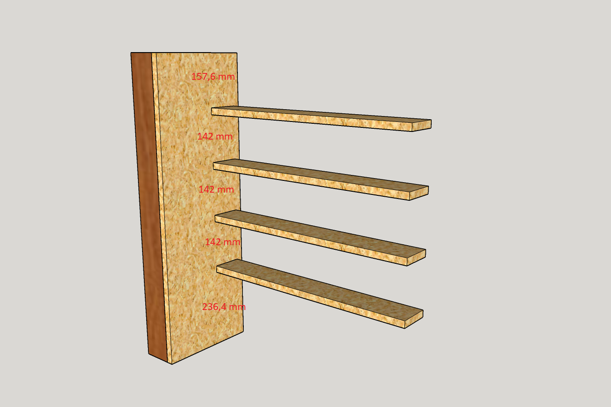
4. Etapy pracy
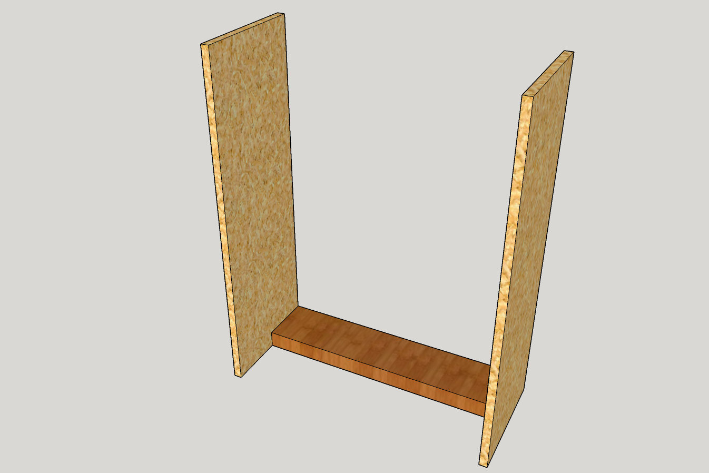
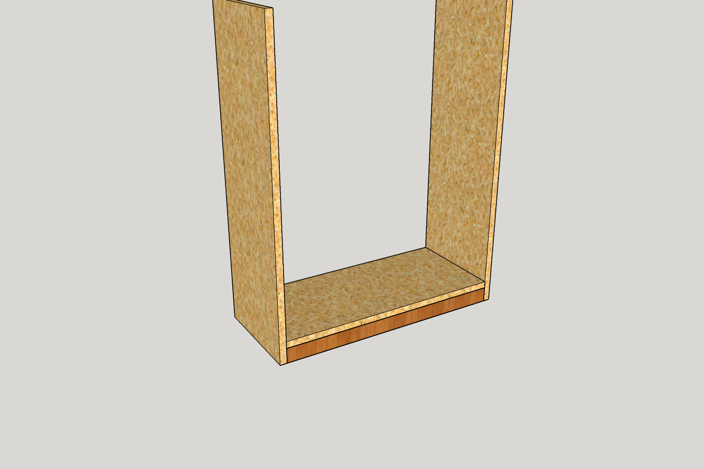
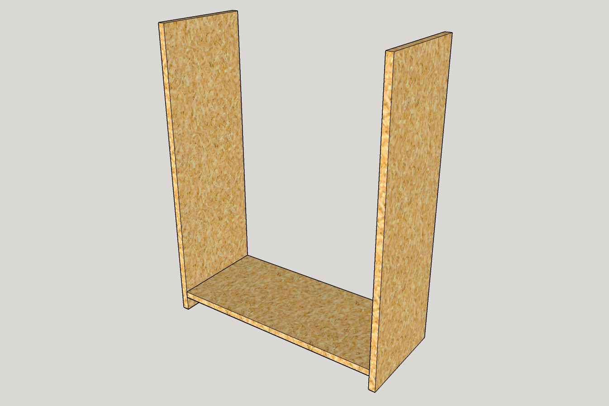
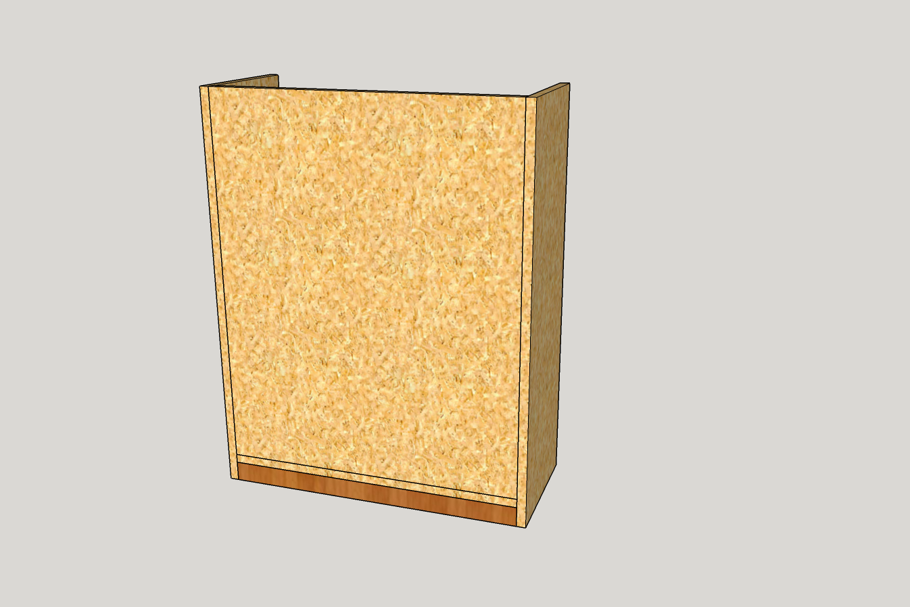
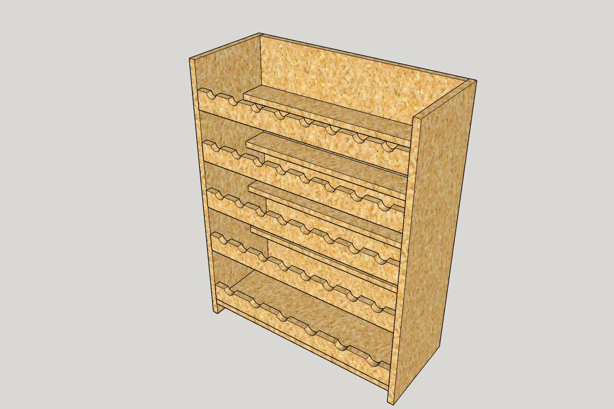
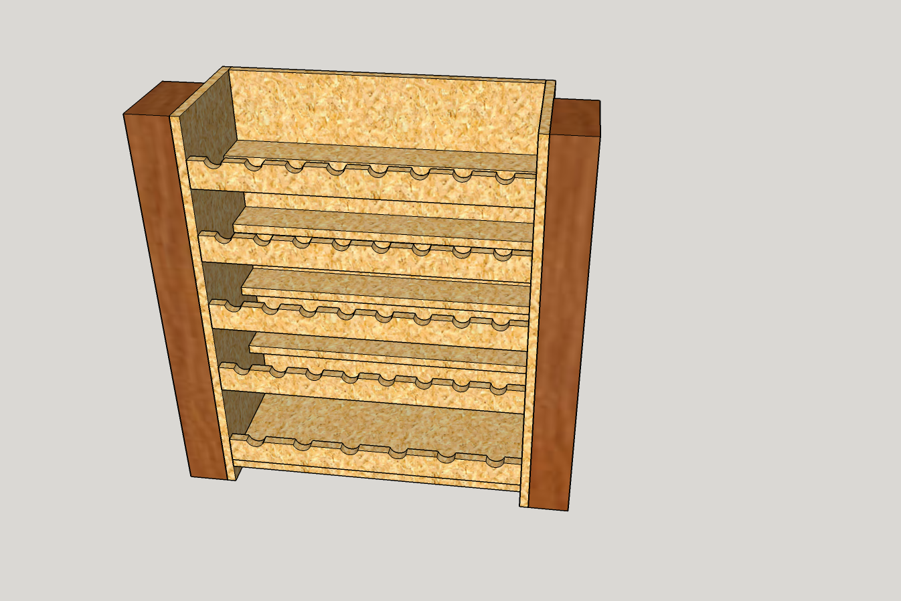
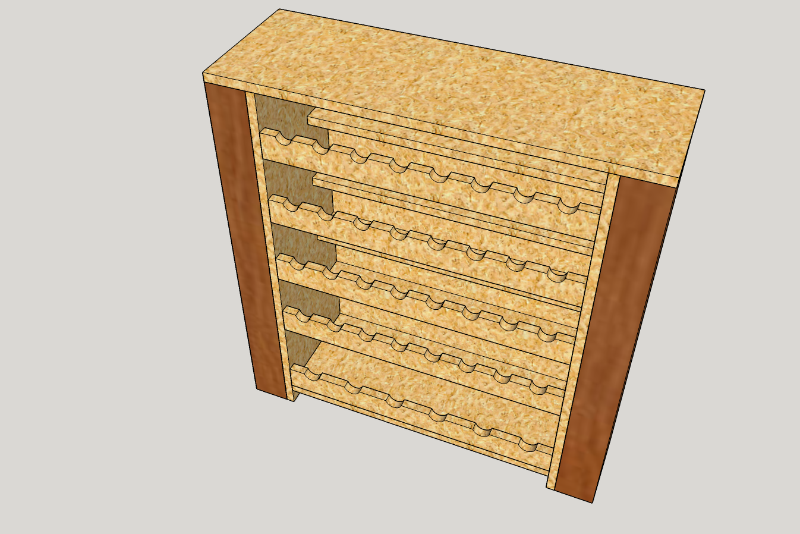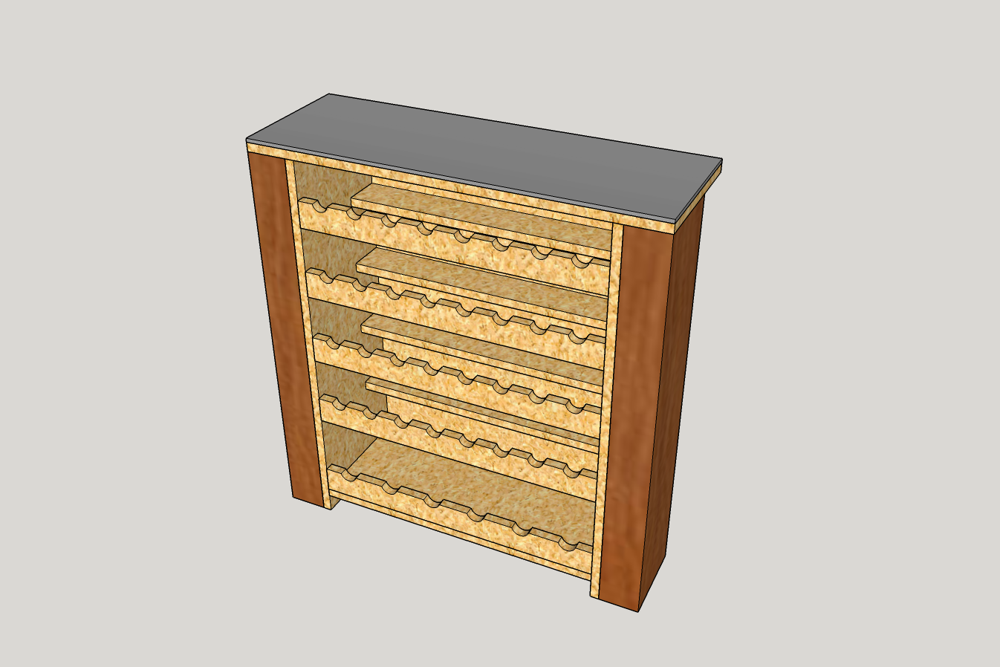